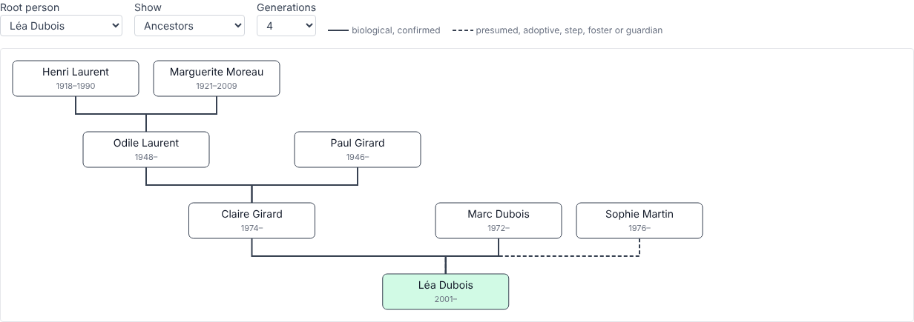
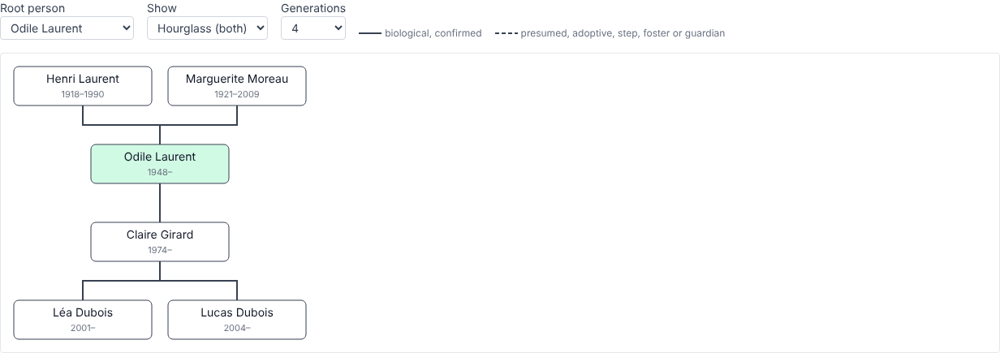
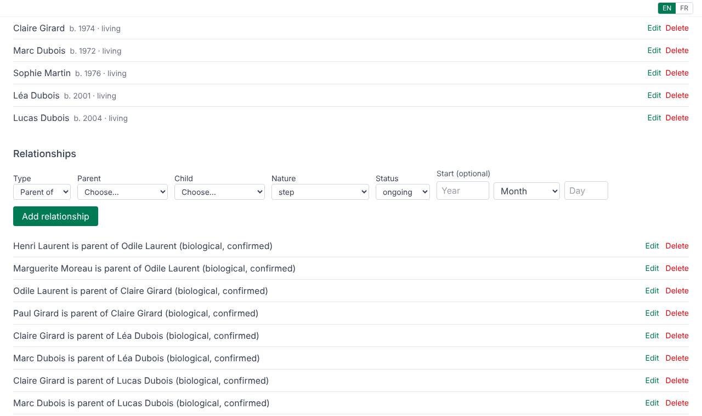

Genealogigi is a desktop app for recording one family's ancestry and seeing it as a tree. No subscription, no account, no upload: it is free because it is meant to be.
Get Genealogigi View the code
Everything lives in a single JSON file you choose. Back it up, copy it, keep it in git. Your family data never leaves your computer unless you send it. The app only asks GitHub, on start, whether a newer version exists.
Dates can be partial: just a year, or a month and year. Several names per person (birth, married, nickname) with one marked as primary.
Biological (confirmed or presumed), adoptive, step, foster and guardian parents, with start and end dates. Partners of any kind.
Ancestors, descendants, or an hourglass of both around one person. Click anyone to re-centre the tree on them.
One button commits, pulls and pushes the family file using your own git and credentials. Conflicts are never silently merged.
Duplicate links and loops (someone being their own ancestor) are refused. Every change is saved at once, and undone if saving fails.


Genealogigi is named after my grandmother, Gigi. A family's story is worth keeping in a form that outlasts any one app, so the file is plain JSON and the app is free.
There is no installer to download yet. Genealogigi is built with Tauri, Vue and TypeScript, and runs on Windows (the main target). To try it today:
git clone https://github.com/promethee/genealogigi cd genealogigi npm install npm run tauri:dev # run it npm run tauri:build # make an installer
You need Node.js 24+ and Rust, see the Tauri prerequisites. Installers will appear on the releases page once there are releases.